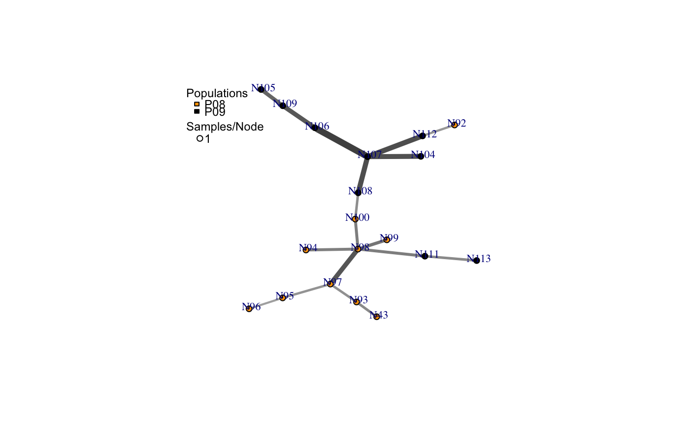

Create minimum spanning network of selected populations using Bruvo's distance.
bruvo.msn(gid, replen = 1, add = TRUE, loss = TRUE, mlg.compute = "original", palette = topo.colors, sublist = "All", blacklist = NULL, vertex.label = "MLG", gscale = TRUE, glim = c(0, 0.8), gadj = 3, gweight = 1, wscale = TRUE, showplot = TRUE, include.ties = FALSE, threshold = NULL, clustering.algorithm = NULL, ...)
| gid | a |
|---|---|
| replen | a |
| add | if |
| loss | if |
| mlg.compute | if the multilocus genotypes are set to "custom" (see
|
| palette | a |
| sublist | a |
| blacklist | a |
| vertex.label | a |
| gscale | "grey scale". If this is |
| glim | "grey limit". Two numbers between zero and one. They determine
the upper and lower limits for the |
| gadj | "grey adjust". a positive |
| gweight | "grey weight". an |
| wscale | "width scale". If this is |
| showplot | logical. If |
| include.ties | logical. If |
| threshold | numeric. By default, this is |
| clustering.algorithm | string. By default, this is |
| ... | any other arguments that could go into plot.igraph |
a minimum spanning network with nodes corresponding to MLGs within the data set. Colors of the nodes represent population membership. Width and color of the edges represent distance.
a vector of the population names corresponding to the vertex colors
a vector of the hexadecimal representations of the colors used in the vertex colors
The minimum spanning network generated by this function is generated
via igraph's minimum.spanning.tree. The resultant
graph produced can be plotted using igraph functions, or the entire object
can be plotted using the function plot_poppr_msn, which will
give the user a scale bar and the option to layout your data.
mlg.compute
argument, above.genclone,
and it contains contracted multilocus genotypes, this function will retain
that information for creating the minimum spanning network. You can use the
arguments threshold and clustering.algorithm to change the
threshold or clustering algorithm used in the network. For example, if you
have a data set that has a threshold of 0.1 and you wish to have a minimum
spanning network without a threshold, you can simply add
threshold = 0.0, and no clustering will happen.
The threshold and clustering.algorithm arguments can also be
used to filter un-contracted data sets.
Please see the documentation for
bruvo.dist for details on the algorithm.
The edges of these graphs may cross each other if the graph becomes too large.
The nodes in the graph represent multilocus genotypes. The colors of the nodes are representative of population membership. It is not uncommon to see different populations containing the same multilocus genotype.
Ruzica Bruvo, Nicolaas K. Michiels, Thomas G. D'Souza, and Hinrich Schulenburg. A simple method for the calculation of microsatellite genotype distances irrespective of ploidy level. Molecular Ecology, 13(7):2101-2106, 2004.
bruvo.dist, nancycats,
plot_poppr_msn, minimum.spanning.tree
bruvo.boot, greycurve poppr.msn
# Load the data set. data(nancycats) # View populations 8 and 9 with default colors. bruvo.msn(nancycats, replen = rep(2, 9), sublist=8:9, vertex.label="inds", vertex.label.cex=0.7, vertex.label.dist=0.4)#> $graph #> IGRAPH 7f82159 UNW- 19 18 -- #> + attr: name (v/c), size (v/n), shape (v/c), pie (v/x), pie.color #> | (v/x), label (v/c), weight (e/n), color (e/c), width (e/n) #> + edges from 7f82159 (vertex names): #> [1] N43 --N93 N92 --N112 N94 --N98 N95 --N96 N95 --N97 N98 --N99 #> [7] N98 --N100 N98 --N97 N98 --N111 N100--N108 N93 --N97 N104--N107 #> [13] N105--N109 N106--N107 N106--N109 N107--N108 N107--N112 N111--N113 #> #> $populations #> [1] "P08" "P09" #> #> $colors #> P08 P09 #> "#4C00FFFF" "#00E5FFFF" #># NOT RUN { # View heat colors. bruvo.msn(nancycats, replen=rep(2, 9), sublist=8:9, vertex.label="inds", palette=heat.colors, vertex.label.cex=0.7, vertex.label.dist=0.4) # View custom colors. Here, we use black and orange. bruvo.msn(nancycats, replen=rep(2, 9), sublist=8:9, vertex.label="inds", palette = colorRampPalette(c("orange", "black")), vertex.label.cex=0.7, vertex.label.dist=0.4) # View with darker shades of grey (setting the upper limit to 1/2 black 1/2 white). bruvo.msn(nancycats, replen=rep(2, 9), sublist=8:9, vertex.label="inds", palette = colorRampPalette(c("orange", "black")), vertex.label.cex=0.7, vertex.label.dist=0.4, glim=c(0, 0.5)) # View with no grey scaling. bruvo.msn(nancycats, replen=rep(2, 9), sublist=8:9, vertex.label="inds", palette = colorRampPalette(c("orange", "black")), vertex.label.cex=0.7, vertex.label.dist=0.4, gscale=FALSE) # View with no line widths. bruvo.msn(nancycats, replen=rep(2, 9), sublist=8:9, vertex.label="inds", palette = colorRampPalette(c("orange", "black")), vertex.label.cex=0.7, vertex.label.dist=0.4, wscale=FALSE) # View with no scaling at all. bruvo.msn(nancycats, replen=rep(2, 9), sublist=8:9, vertex.label="inds", palette = colorRampPalette(c("orange", "black")), vertex.label.cex=0.7, vertex.label.dist=0.4, gscale=FALSE) # View the whole population, but without labels. bruvo.msn(nancycats, replen=rep(2, 9), vertex.label=NA) # }